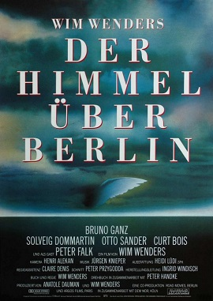

Wim Wenders
1987
127 minutes
TITLE: Wings of Desire TEXT PLACEHOLDER 170
If you read the Wikipedia entry on this movie, which you've seen clips of, you're going to assume that Peter Falk is now a meme and the page has somehow been vandalized. Peter Falk plays himself...as an angel. He is literally Peter Falk, but he has rejected his angel-hood to come down to earth as an angel. But he's Peter Falk. Columbo. He's not the main character, but his character is absolutely essential to the plot, which deals with two guardian angels who walk the earth and kind of lazily do some angel shit, like comforting people at the moments of their deaths, trying to prevent suicides (unsuccessfully), and listening to their thoughts and subtly affecting their actions. One of the angels decides to become a real boy, and Peter Falk can sense him and talk to him. He provides him some guidance through the process. He hilariously compares notes with the one angel about how much he got when he hawked his standard angel issue sword and armor at the pawn shop, noting that he got ripped off.
A local artist you know who is a metalworker known for her miniatures made a miniature based on the Staatsbibliothek zu Berlin as gorgeously portrayed in this film. That scene alone, where the angels drift through the library listening to dozens of people's thoughts in various languages, is absolutely worth watching the film. The fact that an artist you know and like spent that amount of time lovingly recreating this set speaks highly of this film.
Time to choose something different: